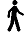
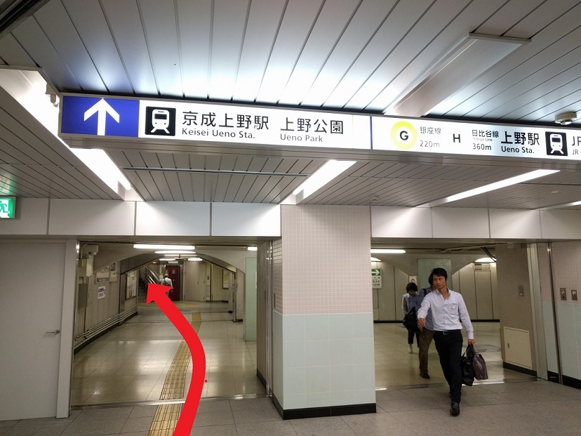
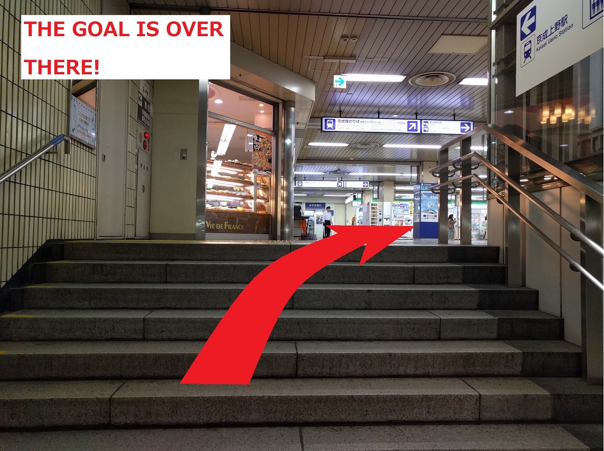
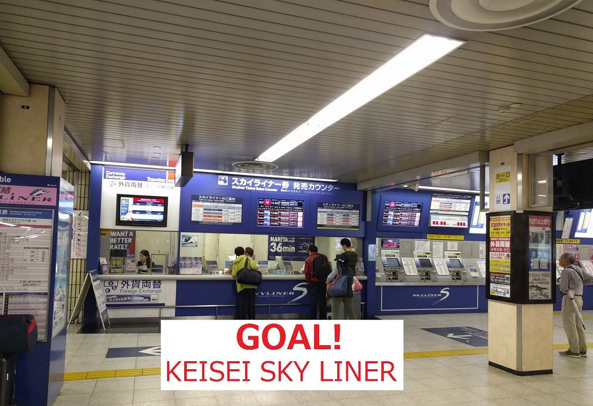
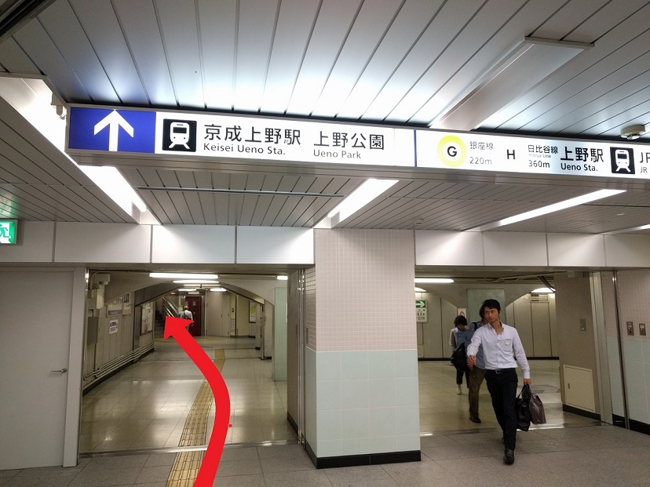
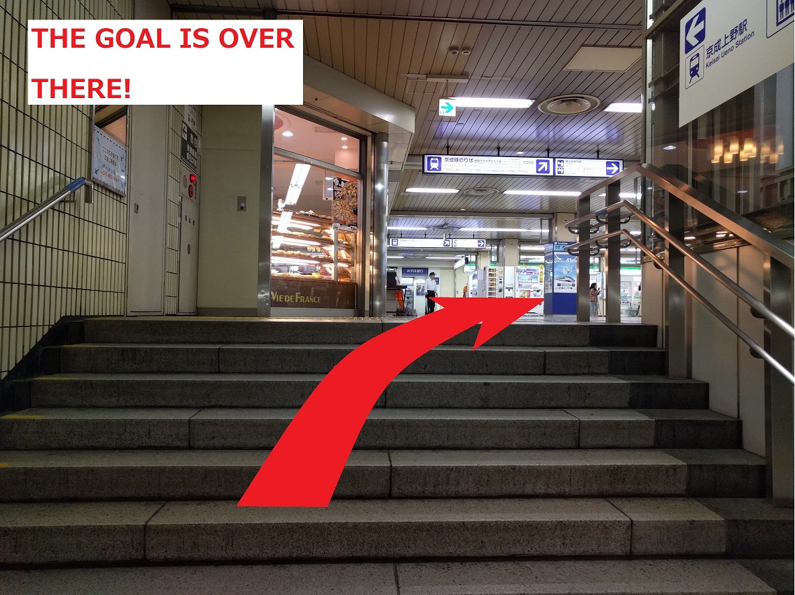
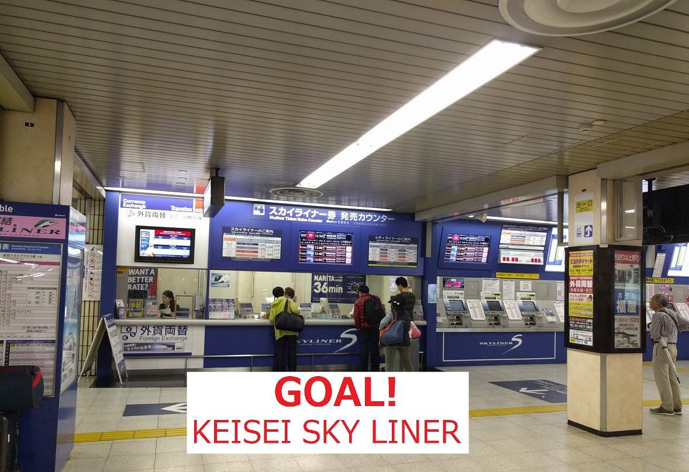

Routes from Narita airport to Ryogoku station (Oedo line)

Oedo line: Ryogoku --> Ueno Okachimachi (3 stations - 5 min)
Walk from Ueno Okachimachi --> Keisei Ueno (10 min)
Skyliner Keisei Line: Keisei Ueno --> Narita airport (3 stations - 45 min)
Total travel time estimated: 1 hour
Fee: 2,650 JPY

 




